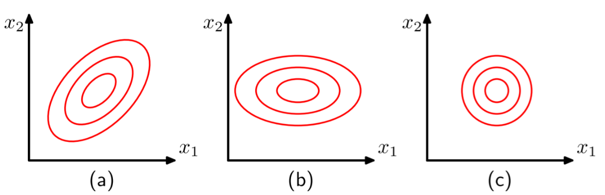

再看高斯
高斯分布 在机器学习中是如此重要，我们必须对其进行透彻的理解和掌握。
1 定义
对于单变量随机变量高斯分布可以写为：
\begin{equation} \label{eq:1} \mathcal{N}(x|\mu,\sigma^{2}) = \frac{1}{\sqrt{2\pi \sigma^{2}}} \exp\bigg\{-\frac{(x-\mu)^{2}}{2\sigma^{2}} \bigg\} \end{equation}我们在 之前的博文 中证明过这个形式的分布确实是概率分布，此处略去证明。
对于\(D\)维的高斯随机矢量\(\mathbf{x}\)，则：
\begin{equation} \label{eq:2} \mathcal{N}(\mathbf{x}| \mathbf{\mu}, \mathbf{\Sigma}) = \frac{1}{(2\pi)^{D/2}}\frac{1}{| \mathbf{\Sigma} |^{1/2}}\exp \bigg\{ -\frac{1}{2}( \mathbf{x} - \mathbf{\mu} )^{T} \mathbf{\Sigma}^{-1} ( \mathbf{x} - \mathbf{\mu} ) \bigg\} \end{equation}其中\(\mathbf{\mu}\)是\(D\)维的均值矢量，\(\mathbf{\Sigma}\)是\(D\times D\)的协方差矩阵。\( | \mathbf{\Sigma} | \)是\( \mathbf{\Sigma} \)的行列式。
高斯分布如同幽灵一样无处不在。比如，对于单变量随机变量，最大化熵的分布是高斯分布，同样对于多变量随机矢量亦是如此。再比如，假设我们考虑多个随机变量和的分布，根据中心极限定理，满足一定条件后（这些条件都是很容易满足的条件），这些随机变量的和服从高斯分布。在机器学习中更是如此。实际上，对高斯分布的处理需要相当的数学基础，但是在以后的学习中，我们会发现这种投入是值得的。
2 高斯分布的形状
对单变量高斯分布我们早已熟悉其钟形曲线。对于高斯矢量，我们从式(\ref{eq:2})可以看到起形状依赖于二次型：
\begin{equation} \label{eq:3} \Delta^{2} = ( \mathbf{x} - \mathbf{\mu} )^{T} \mathbf{\Sigma}^{-1} ( \mathbf{x} - \mathbf{\mu} ) \end{equation}这个\(\Delta\)叫做\( \mathbf{\mu} \)到\( \mathbf{x} \)的 Mahalanobis距离。当\(\mathbf{\Sigma}\)是单位阵时，这个距离退化为欧几里得距离。当这个二次型是常量的时候，高斯分布在\(\mathbf{x}\)面上是常量。
不失一般性，对于\(\mathbf{\Sigma}\)我们可以假设其为实的对称的。对于实的对称的\(\mathbf{\Sigma}\)，其特征值也一定是实的。
\begin{equation} \label{eq:4} \mathbf{\Sigma} \mathbf{u}_{i} = \lambda_{i} \mathbf{u}_{i} \end{equation}其中\(i=1,\ldots ,D\)。因为\(\mathbf{\Sigma}\)是实的对称的，所以其特征向量可以从一个正交基中选取，即：
\begin{equation} \label{eq:5} \mathbf{u}_{i}^{T} \mathbf{u}_{j} = \sigma_{ij} \end{equation}协方差矩阵\(\mathbf{\Sigma}\)可以表示为特征向量的扩展：
\begin{equation} \label{eq:6} \mathbf{\Sigma} = \sum_{i=1}^{D} \lambda_{i} \mathbf{u}_{i} \mathbf{u}_{i}^{T} \end{equation}同理，协方差矩阵的逆矩阵也可以表示为：
\begin{equation} \label{eq:7} \mathbf{\Sigma}^{-1} = \sum_{i=1}^{D}\frac{1}{\lambda_{i}}\mathbf{u}_{i} \mathbf{u}_{i}^{T} \end{equation}我们定义：
\begin{equation} \label{eq:8} y_{i} = \mathbf{u}_{i}^{T}( \mathbf{x} - \mathbf{u} ) \end{equation}则式 (\ref{eq:3})可以简化为：
\begin{equation} \label{eq:9} \Delta^{2} = \sum_{i=1}^{D}\frac{y_{i}^{2}}{\lambda_{i}} \end{equation}我们可以把\(y_{i}\)解释为一个新的坐标系统，该坐标由正交矢量\(\mathbf{u}_{i}\)通过相对于原来的坐标\(x_{i}\)移位和旋转得到。为了生成\(\mathbf{y}= (y_{1},\ldots ,y_{D})^{T}\)，我们有：
\begin{equation} \label{eq:10} \mathbf{y} = \mathbf{U}(\mathbf{x}- \mathbf{\mu}) \end{equation}其中\(U\)是一个矩阵，其每一行是\(\mathbf{u}_{i}^{T}\)，根据式 (\ref{eq:5})我们知道\(\mathbf{U}\)是一个正交矩阵，即\(\mathbf{U}\mathbf{U}^{T} = \mathbf{I}\)。 从式 (\ref{eq:8})我们可以知道二次型 (\ref{eq:3}) 在平面上是一个常量。如果所有的特征值\(\lambda_{i}\)是正数，那么这些二次型是椭圆, 其中心在\(\mathbf{\mu}\),其轴的方向是\(\mathbf{u}_{i}\)的方向，轴的长度与特征值\(\lambda_{i}\)有关。如图1所示：

图 1: 二维高斯矢量在\(\exp(-1/2)\)时的图形
为了使得高斯随机变量有比较严格的定义，要求所有的特征值\(\lambda_{i}\)是正数，否则这个分布的积分就不会是1，也就是说这个分布没有归一化。对于非正定矩阵（有至少一个特征值为0或者负数），高斯分布会降维为低维的子空间。
现在我们在新的坐标系下考虑高斯分布。从\(\mathbf{x}\)到\(\mathbf{y}\)的转化过程，我们有一个Jacobian矩阵\(\mathbf{J}\)，
\begin{equation} \label{eq:11} J_{ij} = \frac{\partial x_{i}}{\partial y_{j}} = U_{ji} \end{equation}其中\(U_{ji}\)是矩阵\(\mathbf{U}^{T}\)的元素。根据\(\mathbf{U}\)的正交性，我们得到：
\begin{equation} \label{eq:12} | \mathbf{J} |^2 = | \mathbf{U}^T |^2 = | \mathbf{U}^T| |\mathbf{U}| = |\mathbf{I}| = 1 \end{equation}所以：
\begin{equation} \label{eq:13} | \mathbf{\Sigma} |^{1/2} = \prod_{j=1}^D \lambda_j^{1/2} \end{equation}所以在\(y_{j}\)坐标系中，高斯分布的形式是：
\begin{equation} \label{eq:14} p(\mathbf{y}) = p(\mathbf{x})|\mathbf{J}| = \prod_{j=1}^{D} \frac{1}{(2\pi\lambda)^{1/2}}\exp\bigg\{ - \frac{y_{j}^{2}}{2\lambda_{j}}\bigg\} \end{equation}这个形式非常的简洁可以看做是多个独立的高斯随机变量的乘积。特征向量定义了移位和旋转的规则，基于这个规则联合概率密度分解为独立随机变量的乘积。显然：
\begin{equation} \label{eq:15} \int p(\mathbf{y}) \mathrm{d}\mathbf{y} = \prod_{j=1}^{D}\frac{1}{(2\pi)^{1/2}}\exp\bigg\{ -\frac{y_{j}^{2}}{2\lambda_{j}} \bigg\} dy_{j} =1 \end{equation}3 多变量高斯分布的期望和方差
接下来我们通过观察多变量高斯分布的矩赋予\(\mathbf{\mu}\)和\(\mathbf{\Sigma}\)特定的数学意义。高斯随便量\(\mathbf{x}\)的期望：
\begin{eqnarray} \label{eq:16} \mathbb{E}[x]&=& \frac{1}{(2\pi)^{D/2}}\frac{1}{|\mathbf{\Sigma}|^{1/2}}\int \exp\bigg\{ -\frac{1}{2}(\mathbf{x}- \mathbf{\mu})^{T}\mathbf{\Sigma}^{-1}(\mathbf{x} - \mathbf{\mu})\bigg\}\mathbf{x}\mathrm{d}\mathbf{x} \\ &=& \frac{1}{(2\pi)^{D/2}}\frac{1}{|\mathbf{\Sigma}|^{1/2}}\int \exp\bigg\{ -\frac{1}{2}(\mathbf{z})^{T}\mathbf{\Sigma}^{-1}(\mathbf{z})\bigg\}(\mathbf{x}- \mathbf{\mu})\mathrm{d}\mathbf{z} \end{eqnarray}我们实用了变量替换\(\mathbf{z} = \mathbf{x} - \mathbf{\mu}\)。我们注意到指数函数部分是一个偶函数所以在积分过程中\(\mathbf{z}+\mathbf{\mu}\)中的\(\mathbf{z}\)会变为\(0\)（奇函数在\((-\infty,\infty)\)上的积分为\(0\)），只剩下\(\mathbf{\mu}\)，因此：
\begin{equation} \label{eq:17} \mathbb{E}[\mathbf{x}] = \mathbf{\mu} \end{equation}我们称\(\mathbf{\mu}\)为\(\mathbf{x}\)的均值。 接下来，我们考虑高斯分布的二阶矩。在单变量场景下，二阶矩定义为\(\mathbb{E}[x^{2}]\)，在多变量时，有\(D^{2}\)个二阶矩\(\mathbb{E}[x_{i}x_{j}]\)，我们把这些二阶矩合在一起构成一个矩阵\(\mathbb{E}[\mathbf{x}\mathbf{x}^{T}]\)，这个矩阵的计算过程为：
\begin{eqnarray} \label{eq:18} &&\mathbb{E}[\mathbf{x}\mathbf{x}^{T}] = \frac{1}{(2\pi)^{D/2}}\frac{1}{|\mathbf{\Sigma}|^{1/2}}\int \exp\bigg\{ -\frac{1}{2}(\mathbf{x}- \mathbf{\mu})^{T}\mathbf{\Sigma}^{-1}(\mathbf{x} - \mathbf{\mu})\bigg\}\mathbf{x}\mathbf{x}^{T}\mathrm{d}\mathbf{x} \\ &=& \frac{1}{(2\pi)^{D/2}}\frac{1}{|\mathbf{\Sigma}|^{1/2}}\int \exp\bigg\{ -\frac{1}{2}(\mathbf{z})^{T}\mathbf{\Sigma}^{-1}(\mathbf{z})\bigg\}(\mathbf{z}+ \mathbf{\mu})(\mathbf{z}+ \mathbf{\mu})^{T}\mathrm{d}\mathbf{z} \end{eqnarray}这里我们再一次的实用了变量替换\(\mathbf{z} = \mathbf{x} - \mathbf{\mu}\)。\((\mathbf{z}+ \mathbf{\mu})(\mathbf{z}+ \mathbf{\mu})^{T}\)中的\(\mathbf{\mu}\mathbf{z}^{T}\)和\(\mu^{T}\mathbf{z}\)在积分过程中会变为\(0\)，只剩下\(\mathbf{\mu}\mathbf{\mu}^{T}\)和\(\mathbf{z}\mathbf{z}^{T}\)。对于\(\mathbf{\mu}\mathbf{\mu}^{T}\)，这是个常量，在积分的过程中仍然会以常量的形式留下来。对于\(\mathbf{z}\mathbf{z}^{T}\)我们可以采用\(\mathbf{z}\)的特征向量展开的形式处理。
\begin{equation} \label{eq:19} \mathbf{z} = \sum_{j=1}^{D}y_{j}\mathbf{u}_{j} \end{equation}其中\(y_{j} = \mathbf{u}_{j}^{T}\mathbf{z}\)， 则：
\begin{eqnarray} \label{eq:20} && \frac{1}{(2\pi)^{D/2}}\frac{1}{|\mathbf{\Sigma}|^{1/2}}\int \exp\bigg\{ -\frac{1}{2}(\mathbf{z})^{T}\mathbf{\Sigma}^{-1}(\mathbf{z})\bigg\}(\mathbf{z})(\mathbf{z})^{T}\mathrm{d}\mathbf{z} \\ &=& \frac{1}{(2\pi)^{D/2}}\frac{1}{|\mathbf{\Sigma}|^{1/2}} \sum_{i=1}^{D}\sum_{j=1}^{D} \mathbf{u}_{i}\mathbf{u}_{j}^{T} \int \exp \bigg\{ -\sum_{k=1}^{D}\frac{y_{k}^{2}}{2\lambda_{k}} \bigg\}y_{i}y_{j}\mathrm{d} \mathbf{y} \\ &=& \sum_{i=1}^{D}\mathbf{u}_{i}\mathbf{u}_{i}^{T}\lambda_{i} = \mathbf{\Sigma} \end{eqnarray}综上，我们有：
\begin{equation} \label{eq:21} \mathbf{E}[\mathbf{x}\mathbf{x}^{T}] = \mathbf{\mu}\mathbf{\mu}^{T} + \mathbf{\Sigma} \end{equation}对于单变量，我们通过\(\mathbb{E}[(x-\mu)(x-\mu)]\)来定义方差。同样的在多变量情况下，仍然可以减去军区，定义一个随机矢量的协方差：
\begin{equation} \label{eq:22} \mathrm{cov}[\mathbf{x}] = \mathbb{E}[ ( \mathbf{x} - \mathbb{E}[\mathbf{x}] )( \mathbf{x} - \mathbb{E}[\mathbf{x}] )^{T} ] \end{equation}对于高斯分布，我们有：
\begin{equation} \label{eq:23} \mathrm{cov}[\mathbf{x}] = \mathbf{\Sigma} \end{equation}又因为参数\(\mathbb{\Sigma}\)控制着\(\mathbf{x}\)的协方差。所以我们称\(\mathbb{\Sigma}\)为协方差矩阵。
4 高斯分布的局限
尽管高斯分布用途广泛，但其也不是放之四海而皆准的真理。高斯分布有其独有的缺陷。考虑一个一般的对称协方差矩阵\(\mathbf{\Sigma}\)，其有\(D(D+1)/2\)个独立的参数。对于\(\mathbf{\mu}\)，又有\(D\)个独立的参数。多以一共有\(D(D+3)/2\)个参数。当\(D\)变大时，其独立的参数个数以\(D\)的二次方增长。计算这么大矩阵的逆矩阵是一件非常困难的事情。解决办法？一个有效的办法是限制协方差矩阵的形式，如果我们只考虑\(\mathbf{\Sigma}\)是对角阵，即\(\mathbf{\Sigma} = \mathrm{diag}(\sigma_{i}^{2})\),我们就只用关心\(2D\)个独立的参数。对应的概率密度图像是一系列同心的且轴与坐标轴平行的椭圆。当我们限制协方差矩阵\(\mathbf{\Sigma} = \sigma^{2}\mathbf{I}\)时，这个协方差矩阵叫做各向同性协方差。这个时候我们只需要处理\(D+1\)个独立的参数。三个类型的高斯分布，在固定概率密度下的形状如图2所示。

图 2: 高斯分布在固定概率时的形状
有得必有失。图2 中对高斯分布的近似限制了分布中的自由变量个数使得求逆变得异常简单，但是也限制了概率密度函数的形式，使我们很难捕捉到数据中的可能有用的相关性。
另一个高斯分布的限制是：高斯分布是单峰分布，只有一个最大值。所以高斯分布对于多峰分布的模拟能力有限。所以高斯分布一方面可能由于过多的参数而过于灵活，一方面由于其具有单封特性而只有有限的近似能力。我们在以后的学习中会看到，通过引入隐藏变量可以很好的解决这个问题。特别是，通过引入离散的隐式变量到混合高斯模型（mixtures of Gaussians）中，我们可以获得丰富多彩的多峰分布（multimodal distributions）。通过引入连续的隐式变量，对模型的控制可以独立于\(D\)维的数据空间。实际上，通过引入离散的或者连续的隐式随机变量，我们获得了非常多的有用模型，这些模型在机器学习的方方面面都发挥了重要的作用。比如，基于高斯模型的马尔科夫随机场（Markov Random field, MRF）在图像处理方面的应用。比如，线性动态系统（linear dynamical system，LDS）在时间序列建模方面也非常重要。